1 Основные понятия ОС
1.1 Определение ОС
Понятие ОС
Операционная система (ОС) является важной компонентой современной компьютерной системы, состоящей из различных аппаратных и программных составляющих.
Операционная система относится к классу программного обеспечения (software) и обеспечивает работу аппаратных средств (hardware). Операционная система относится к системному программному обеспечению и разрабатывается системными программистами.
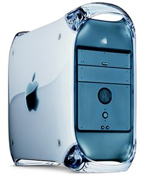
Структура компьютерной системы
В самом общем виде можно представить компьютерную систему так:
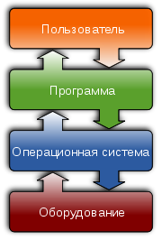Рассмотрим более детальную структуру современной вычислительной системы
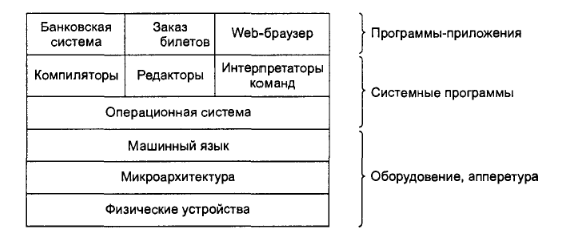
Физические устройства представляют собой аппаратное обеспечение компьютера (процессор, платы, диски, устройства ввода/вывода информации).
Микроархитектуру составляют регистры процессора, арифметико-логическое устройство (АЛУ). С их помощью осуществляются простейшие операции над данными – сложение, вычитание, перенос данных из памяти в регистр и обратно, логические операции. Такие простейшие действия реализуются с помощью микропрограмм.
Машинный язык или система команд процессора представляет собой набор инструкций, с помощью которых происходит обработка данных. Эти инструкции представляют собой программные конструкции более высокого уровня по сравнению с микропрограммами.
Под операционной системой, изображенной на рисунке, понимается абстрактный слой, скрывающий сложности нижних уровней по отношению к верхним уровням. Так, например, этот слой предлагает разработчикам прикладных программ свой набор команд для обработки данных, который более удобен в использовании чем команды машинного языка.
Определение ОС
Согласно общепринятой классификации, программное обеспечение (ПО) делится на прикладное и системное. Прикладное ПО позволяет пользователям решать задачи из разных предметных областей, системное – обеспечивать работу с компьютером на базовом уровне. Операционная система относится к системному программному обеспечению, без которого работа с компьютером была бы трудна, а зачастую и невозможна.
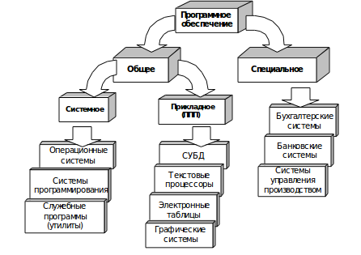
Существуют различные определения понятия ''Операционная система'':
Операционная система, ОС (англ. operating system) - базовый комплекс компьютерных программ, обеспечивающий управление аппаратными средствами компьютера, работу с файлами, ввод и вывод данных, а также выполнение прикладных программ и утилит.
Обращает на себя внимание тот факт, что существуют две группы определений ОС: «совокупность программ, управляющих оборудованием» и «совокупность программ, управляющих другими программами». Обе они имеют свой точный технический смысл, который, однако, становится ясен только при более детальном рассмотрении вопроса о том, зачем вообще нужны операционные системы.
При включении компьютера операционная система загружается в память раньше остальных программ и затем служит платформой и средой для их работы. Помимо вышеуказанных функций ОС может осуществлять и другие, например, предоставление пользовательского интерфейса, сетевое взаимодействие и т.п.
Назначение ОС
Типичная операционная система имеет следующие назначения:
- скрывает от пользователя сложность аппаратных и микропрограммных уровней компьютера;
- обеспечивает удобную работу пользователям;
- распределяет ресурсы между пользователями и программами. ОС выступает для пользователя как в роли виртуальной вычислительной машины с упрощенной архитектурой, так и в роли менеджера ресурсов (память, процессорное время).
Когда ОС не нужна
Существуют компьютеры, для которых не нужна ОС:
- Микрокомпьютер, встраиваемый в бытовую технику, автомобили.
- Простая игровая приставка
Такие компьютеры постоянно исполняют лишь одну программу, запускающуюся по включении.
Некоторые микрокомпьютеры и игровые приставки всё же работают под управлением особых собственных ОС. В большинстве случаев, это UNIX-подобные системы (последнее особенно верно в отношении программируемого коммутационного оборудования: файрволов, маршрутизаторов).
Когда ОС нужна
- Вычислительная система используется для различных задач, причём программы, исполняющие эти задачи, нуждаются в сохранении данных и обмене ими.
- Различные программы нуждаются в выполнении одних и тех же рутинных действий.
- Между программами и пользователями системы необходимо распределять полномочия, чтобы пользователи могли защищать свои данные от несанкционированного доступа, а возможная ошибка в программе не вызывала тотальных неприятностей;
- Необходима возможность имитации «одновременного» исполнения нескольких программ на одном компьютере
- Оператор должен иметь возможность управлять процессами выполнения отдельных программ. Для этого служат операционные среды, одна из которых — оболочка и набор стандартных утилит — является частью ОС
1.2 Функции ОС
Основные функции ОС
Существует две основных функции ОС:
- Выступать в роли виртуальной машины
- Выступать в роли менеджера ресурсов
Рассмотрим функцию виртуальной машины
Основные задачи:
- Скрывать от пользователя компьютера и прикладных программ аппаратные особенности технических средств
- Скрывать от пользователя и прикладных программ сложность микроархитектурного уровня с его сотнями команд и параметров
- Обеспечивать программам иллюзию единоличного ''владения'' компьютером
- Предоставлять удобный пользовательский интерфейс (командный или графический)
Перечислим основные задачи ОС, как менеджера ресурсов
- Загрузка приложений в оперативную память и их выполнение.
- Управление оперативной памятью (распределение между процессами).
- Управление доступом к данным на энергонезависимых носителях (таких как жёсткий диск, компакт-диск и т. д.)
- Сетевые операции, поддержка стека протоколов.
Дополнительные функции ОС
Помимо основных функций, ОС выполняет дополнительные:
- Взаимодействие между процессами: обмен данными, взаимная синхронизация.
- Защита самой системы, а также пользовательских данных и программ от действий пользователей (злонамеренных или по незнанию) или приложений.
- Разграничение прав доступа и многопользовательский режим работы (аутентификация, авторизация).
1.3 Классификация ОС
- По назначению:
- общего назначения;
- специального назначения.
- По режиму обработки задач:
- однозадачные;
- многозадачные.
- По способу взаимодействия с компьютером:
- диалоговые
- системы пакетной обработки
- По организации работы пользователей:
- однопользовательские
- многопользовательские
- По реакции на действия пользователей (программ)
- системы реального времени
- системы с задержками
- По архитектурному принципу
- микроядерные
- макроядерные
- По отношению к сети
- сетевые
- локальные
- По количеству поддерживаемых процессоров
- однопроцессорные
- многопроцессорные
1.4 Требования к ОС
Главным требованием, предъявляемым к операционной системе, является способность выполнения основных функций: эффективного управления ресурсами и обеспечения удобного интерфейса для пользователя и прикладных программ. Современная ОС, как правило, должна реализовывать мультипрограммную обработку, виртуальную память, свопинг, поддерживать многооконный интерфейс, а также выполнять многие другие, совершенно необходимые функции. Кроме этих функциональных требований к операционным системам предъявляются не менее важные рыночные требования. К этим требованиям относятся:
- Расширяемость. Код должен быть написан таким образом, чтобы можно было легко внести дополнения и изменения, если это потребуется, и не нарушить целостность системы.
- Переносимость. Код должен легко переноситься с процессора одного типа на процессор другого типа и с аппаратной платформы (которая включает наряду с типом процессора и способ организации всей аппаратуры компьютера) одного типа на аппаратную платформу другого типа.
- Надежность и отказоустойчивость. Система должна быть защищена как от внутренних, так и от внешних ошибок, сбоев и отказов. Ее действия должны быть всегда предсказуемыми, а приложения не должны быть в состоянии наносить вред ОС.
- Совместимость. ОС должна иметь средства для выполнения прикладных программ, написанных для других операционных систем. Кроме того, пользовательский интерфейс должен быть совместим с существующими системами и стандартами.
- Безопасность. ОС должна обладать средствами защиты ресурсов одних пользователей от других.
- Производительность. Система должна обладать настолько хорошим быстродействием и временем реакции, насколько это позволяет аппаратная платформа.
2 История ОС
История развития операционных систем тесно связано с развитием вычислительной техники.
Можно выделить следующие поколения ЭВМ:
- Первое поколение (1945-1955): электронные лампы и коммутационные панели
- Второе поколение (1955-1965): транзисторы и системы пакетной обработки
- Третье поколение (1965-1980): интегральные схемы и многозадачность
- Четвёртое поколение (1980-наши дни): персональные компьютеры
2.1 Первое поколение
Первое поколение (1945-1955)
На первых ЭВМ использовались механические рэле, а потом и электронные лампы. Скорость вычислений была крайне низкой, а аппаратура крайне ненадёжной.
Операционные системы не использовались, поскольку оператор всё делал вручную: осуществлял ввод и вывод данных, управлял вычислительным процессом.
В начале 50-х годов появились перфокарты, которые стали основным носителем информации.
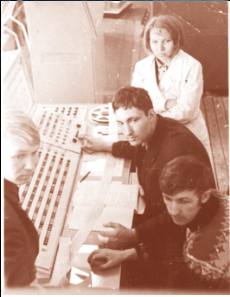2.2 Второе поколение
Второе поколение (1955-1965)
Изобретение транзисторов позволило увеличить производительность ЭВМ, повысить надёжность и сократить размеры.
Сложилось чёткое разделение труда между специалистами:
- Проектировщики
- Сборщики
- Операторы
- Программисты
- Обслуживающий персонал
Стоимость ЭВМ была исключительно высокой (>1 000 000 $) и много времени терялась впустую из-за хождения операторов по машинному залу.
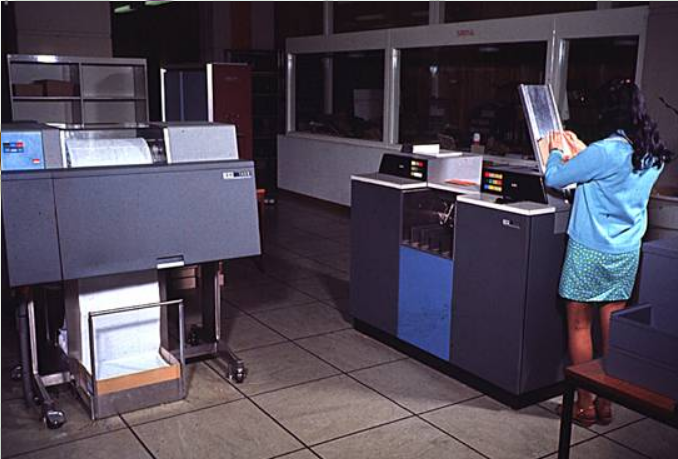Для повышения эффективности стали применять систему пакетной обработки данных

- а) Программист приносит карты для IBM 1401
- б) IBM 1401 записывает пакет заданий на магнитную ленту
- в) Оператор приносит выходные данные на ленте к IBM 7094
- г) IBM 7094 выполняет вычисления
- д) оператор переносит ленту с выходными данными на IBM 1401
- е) IBM 1401 печатает выходные данные
В ЭВМ 2-ого поколения стали использоваться первые простейшие ОС для последовательного считывания заданий с одной ленты и посылки его на выполнения. После завершения одного задания система загружала на выполнение второе и т.д.
Первыми ОС могут считаться:
- FMS - Fortran Monitor System
- IBSYS - для IBM 7094
Структура пакетного задания:
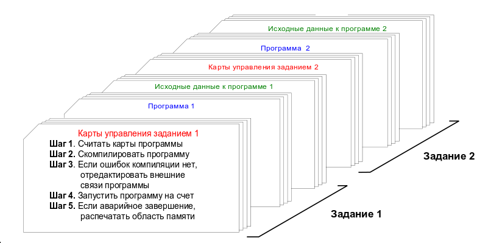2.3 Третье поколение
Третье поколение (1965-1980)
Самая успешная вычислительная машина конца 60-х годов: IBM /360
При её разработке выдвигались требования совместимости с различными существующими ЭВМ.
Для IBM 360 была разработана ОС OS/360. Она состояла из миллионов строк кода на ассемблере.
Была написана книга Ф.Брукса ''Мифический человеко-месяц'', основанная на опыте разработки этой ОС.
Особенности ранних ЭВМ третьего поколения:
- Хранение нескольких заданий параллельно в памяти и переключение процессора с одного задания на другое
- Считывание данных с перфокарт на диск и их накопление (спулинг)
- Использование режима разделения времени для заданий (программ) и пользователей
Разделение времени между программами (мультипрограммирование):
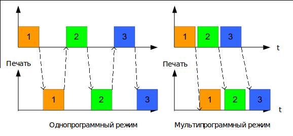
Разделение времени между пользователями:
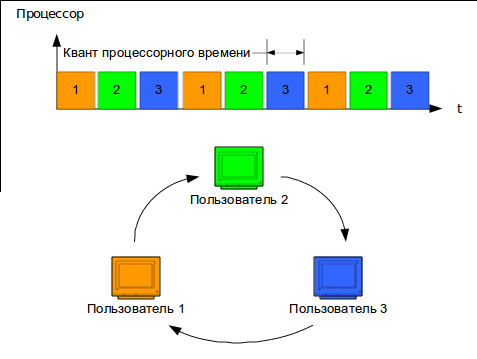
Принцип разделения времени был предложен в 1959 году Д. Маккарти
Родина диалоговых операционных систем с разделением времени –Массачусетский технологический институт – МТИ (Massachusetts Institute of Technology – MIT), прославившийся многими достижениями в области вычислительной техники и информатики
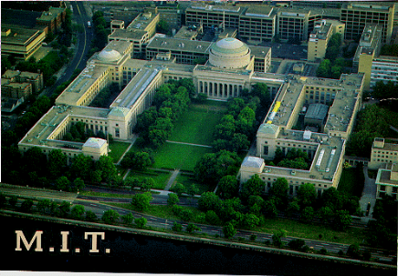
Первая экспериментальная операционная система с разделением времени CTSS (Compartible Time Sharing System).была создана в МТИ в 1961 г. под руководством адъюнкт-профессора Фернандо Корбато (Corbato, Fernando; р. 1926))
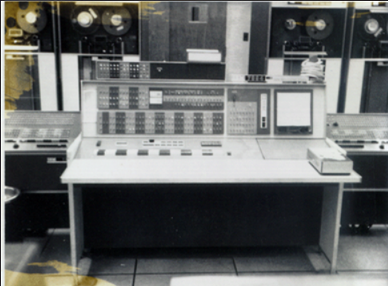Наиболее известный проект ОС 60-х годов - MULTICS
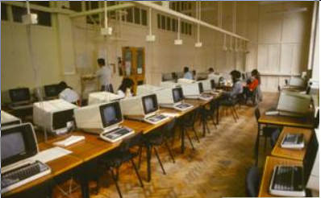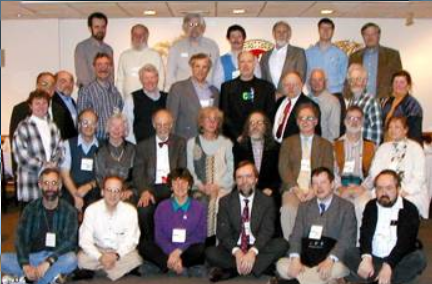
Система MULTICS разрабатывалась для системы коллективного доступа MAC (Multiplexed Access Computer) и ЭВМ GE-645
По замыслу создателей, MAC должен был обеспечивать доступ к вычислительным ресурсам любому человеку в районе г. Бостона.
Проект MULTICS не был завершён, но он стал полигоном для множества конструктивных предложений и идей. На нём было воспитано целое поколение системных программистов.
www.multician.org - сайт системы в Интернет
Другое направление - мини ЭВМ
Компания DEC, начиная с 1961 года выпускала мини ЭВМ серии PDP, стоимостью порядка $120000 (5% стоимости IBM 7094).
Сотрудник Bell Labs Кен Томпсон разработал в 1969 году для PDP-7 ОС UNIX, ставшую популярной во всём мире.
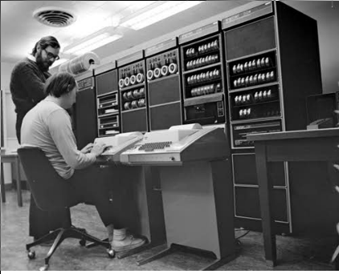2.4 Четвёртое поколение
Новый этап развития ОС связан с появлением персональных компьютеров. Их появлению способствовало развитие элементной базы: на смену интегральным схемам приходят большие интегральные схемы (LSI) с высокой плотностью размещения транзисторов.
В 1974 году Intel выпустила первый универсальный процессор 8080, 8-разрядный. Гари Килдэлл разработал ОС для первого микрокомпьютера под названием CP/M в 1976 году.
ОС CP/M занимала лидирующие позиции на рынке микрокомпьютеров на протяжении 5 лет во второй половине 70-х годов.
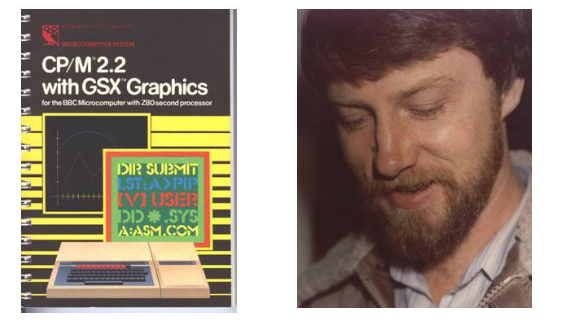CP/M ушла в прошлое, не выдержав конкуренции с платформой IBM PC и операционной системой MS DOS для неё.
MS-DOS была первоначально разработана Тимом Паттерсоном и называлась Q-DOS. Компания Microsoft купила права на эту систему в 1981 году.
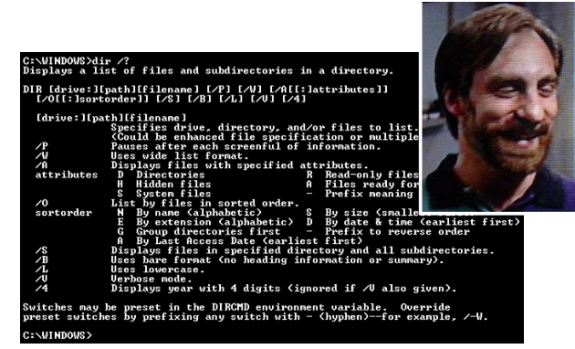В 1985 году Microsoft выпускает надстройку над DOS под названием Windows версии 1.01
Вплоть до версии 3.0 Windows не пользовалась популярностью
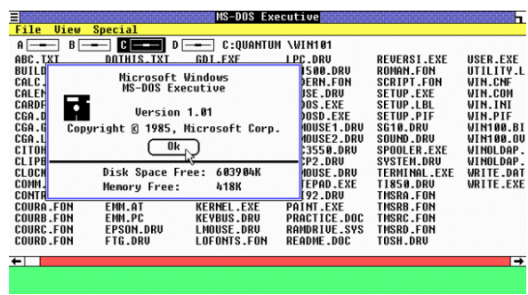
Реальным конкурентом Microsoft была фирма Apple, которая в 1984 году выпустила ПК Macintosh с операционной системой MAC OS, обладавшей графическим интерфейсом пользователя (GUI)
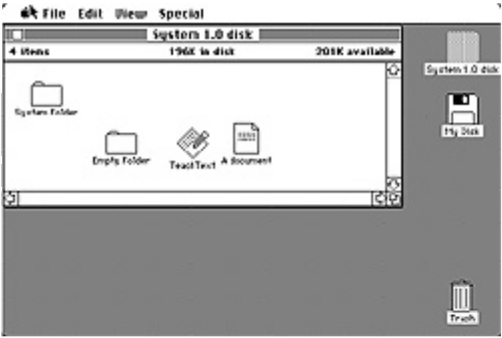
''Звёздный час'' наступил для Microsoft с выпуском Windows 3.0 в 1990 году и Windows 3.1 в 1991 году
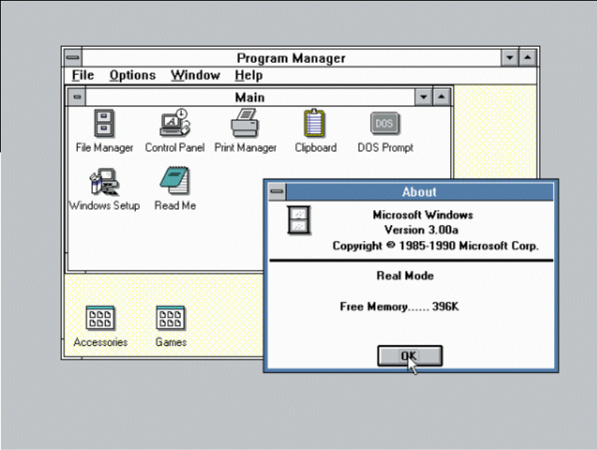
В конце 80-х IBM и Microsoft работали над совместным проектом: OS/2.
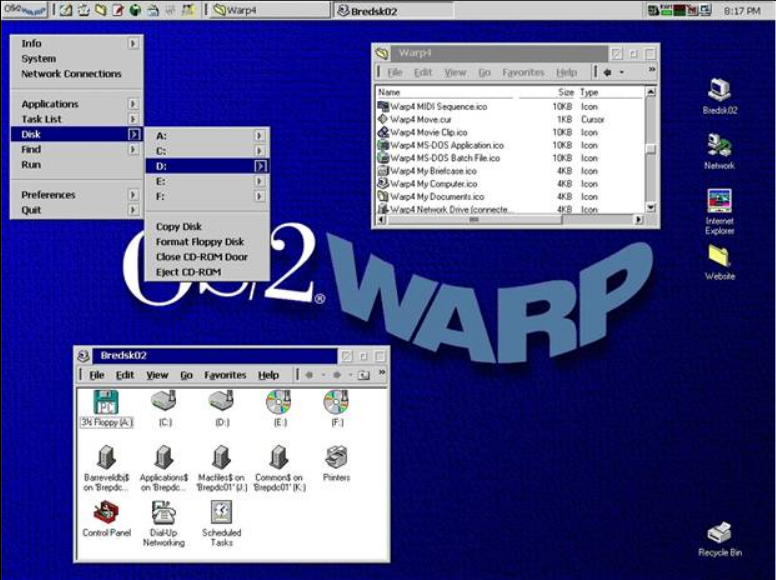
В начале 90-х Microsoft отказалась от OS/2 в пользу Windows NT. OS/2 поддерживалась IBM ещё в течении нескольких лет и была заброшена.
OS/2 была очень ''продвинутой'' системой своего времени и могла бы стать лидером на рынке ПК. Но не стала по ряду причин:
- Отказ от участия в проекте Microsoft
- Ориентация фирмы IBM на корпоративных заказчиков, а не на рядовых пользователей
- Нежелание IBM сделать OS/2 свободно-распространяемой
Для OS/2 характерна необычайная отказоустойчивость, что делало её привлекательной для работы в банковской сфере.
До недавнего времени банкоматы во всём мире работали под управлением OS/2
В течение 90-х годов Microsoft развивало два направления развития ос:
- Windows NT (New Technology) 3.0, 4.0, 5.0 (2000)
- Windows 3.0, 3.1, 3.11, 95, 98, ME
Последняя ветвь, восходящая к MS-DOS оказалась тупиковой и Windows ME оказалась последней в этой линейке Ос.
Все усилия компании были направлены на Nt
Удачной следует признать Windows NT 5.1 (XP), которая была выпущена в 2001 году.
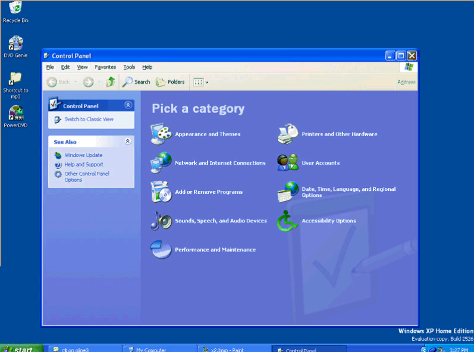
За Windows Xp последовала Windows 6.0 (Vista) и Windows 7.0 (Seven).
''Отцы'' новейших версий Windows: Д. Соломон, Д. Катлер и М. Руссинович

В 2001 году Apple выпустила Mac OS X - гибрид своей старой системы Mac Os и Unix BSD для своих компьютеров Macintosh
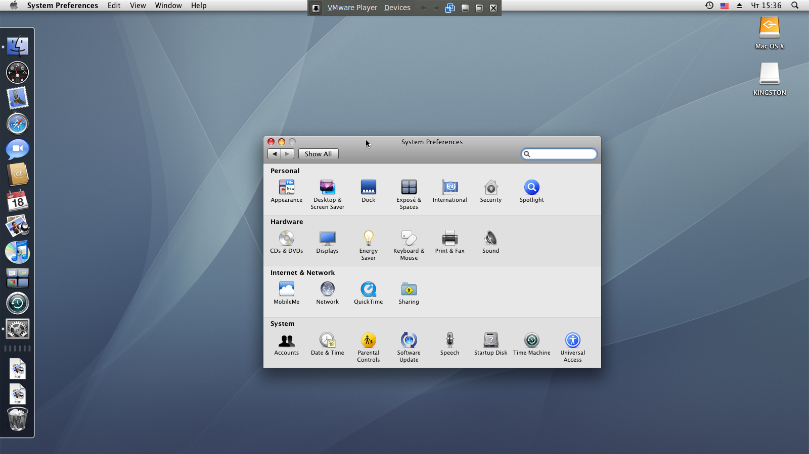
В настоящее время Mac OS X бурно развивается и является существенной альтернативой Windows 7.
Преимущества MAC OS X:
- Система основана на стабильной и надёжной Unix BSD
- Система устойчива к вирусным и сетевым атакам
- Обладает привлекательным пользовательским интерфейсом Aqua
- Динамично развивается
- Поддерживает многие программы Unix
В конце 80-х - начале 90-х возникли несколько клонов операционной системы Unix для персональных компьютеров и мини-ЭВМ:
- Minix - учебная ОС Э. Таненбаума
- Linux - свободный проект Линуса Торвальдса
- FreeBSD - свободный наследник Unix BSD
- Mac OS X - коммерческий наследник Unix BSD
- Sun Solaris - коммерческая Unix фирмы Sun
- AIX - коммерческая Unix фирмы IBM
- HP-UX - коммерческая Unix фирмы HP
- IRIX - коммерческая Unix фирмы Silicon Graphics
и ряд других...
Операционная система MINIX, созданная Э. Таненбаумом описана в книге Разработка и реализация ОС. Исходный код системы поставляется с книгой.
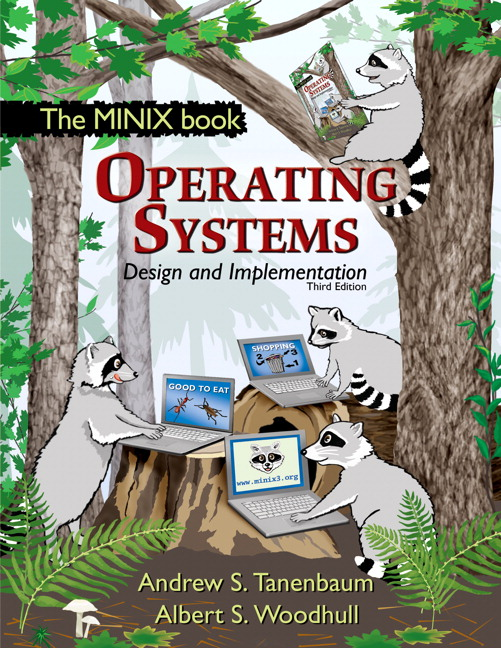
В настоящее время наибольшее распространение получила ОС Linux, созданная в 1991 стараниями Линуса Торвальдса
Торвальдс написал ядро системы, а многочисленные последователи добавили всё остальное.
Linux распространяется в виде различных дистрибутивов
- Red Hat
- Debian
- Ubuntu
- Mint
- Slackware
- Gentoo
В настоящее время существуют сотни (!) дистрибутивов
3 Эволюция идей ОС
Первые компьютеры не имели операционной системы, поскольку все действия по загрузке данных и программ в память выполнялись вручную.
Быстродействие было настолько низким, что не позволяло распараллеливать выполнение задач.
Далее, 1950-60-х годах сформировались и были реализованы основные идеи, определяющие функциональность ОС:
- пакетный режим,
- разделение времени и многозадачность,
- разделение полномочий,
- реальный масштаб времени,
- файловые структуры и файловые системы.
Пакетный режим
Необходимость оптимального использования дорогостоящих вычислительных ресурсов привела к появлению концепции «пакетного режима» исполнения программ. Пакетный режим предполагает наличие очереди программ на исполнение, причём ОС может обеспечивать загрузку программы с внешних носителей данных в оперативную память, не дожидаясь завершения исполнения предыдущей программы, что позволяет избежать простоя процессора.
Разделение времени и многозадачность
Необходимость в разделении времени (многозадачности, мультипрограммировании) проявилась ещё сильнее при распространении в качестве устройств ввода-вывода телетайпов (а позднее, терминалов с электронно-лучевыми дисплеями) (1960-е годы). Поскольку скорость клавиатурного ввода (и даже чтения с экрана) данных оператором много ниже, чем скорость обработки этих данных компьютером, использование компьютера в «монопольном» режиме (с одним оператором) могло привести к простою дорогостоящих вычислительных ресурсов.
Разделение времени позволило создать «многопользовательские» системы, в которых один (как правило) центральный процессор и блок оперативной памяти соединялся с многочисленными терминалами. При этом часть задач (таких, как ввод или редактирование данных оператором) могла исполняться в режиме диалога, а другие задачи (такие, как массивные вычисления) — в пакетном режиме.
Разделение полномочий
Распространение многопользовательских систем потребовало решения задачи разделения полномочий, позволяющей избежать возможности модификации исполняемой программы или данных одной программы в памяти компьютера другой (содержащей ошибку или злонамеренно подготовленной) программы, а также модификации самой ОС прикладной программой.
Реализация разделения полномочий в ОС была поддержана разработчиками процессоров, предложивших архитектуры с двумя режимами работы процессора — «реальным» (в котором исполняемой программе доступно всё адресное пространство компьютера) и «защищённым» (в котором доступность адресного пространства ограничена диапазоном, выделенном при запуске программы на исполнение).
Реальный масштаб времени
Применение универсальных компьютеров для управления производственными процессами потребовало реализации «реального масштаба времени» («реального времени») — синхронизации исполнения программ с внешними физическими процессами.
Включение функции реального масштаба времени в ОС позволило создавать системы, одновременно обслуживающие производственные процессы и решающие другие задачи (в пакетном режиме и (или) в режиме разделения времени).
Файловые системы и структуры
Постепенная замена носителей с последовательным доступом (перфолент, перфокарт и магнитных лент) накопителями произвольного доступа (на магнитных дисках).
4 Современность
4.1 Новые архитектуры
Post Unix архитектуры
Архитектура UNIX систем оказалась чрезвычайно удачно благодаря наличию только двух фундаментальных абстракций:
- Файл
- Процесс
Коллектив, создавший ОС UNIX, развил концепцию унификации объектов ОС, включив в исходную концепцию UNIX ''устройство — это тоже файл'' также и процессы, и любые другие системные, сетевые и прикладные сервисы, создав новую концепцию: ''что угодно — это файл''.
Новый концепт получил название Plan9 и сменил UNIX System V на компьютерах сети Bell Labs в 1992 году.
Графическая оболочка Plan 9
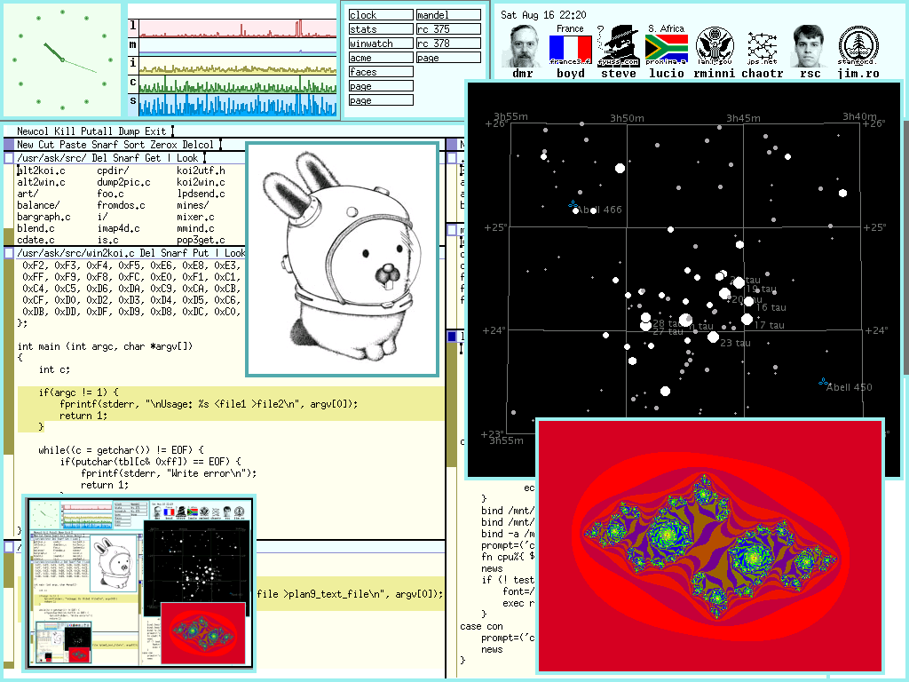Кроме реализации всех объектов ОС в виде файлов и размещения их на едином и персональном для каждого терминала вычислительной сети пространстве (namespace), были пересмотрены другие архитектурные решения UNIX:
- в Plan9 отсутствует понятие ''суперпользователь'', и, соответственно, исключаются любые нарушения режима безопасности, связанные с нелегальным получением прав суперпользователя в системе.
- Роб Пайк и Кен Томпсон разработали универсальную кодировку UTF-8, на сегодняшний день ставшую стандартом де-факто.
- Для доступа к файлам используется единый универсальный протокол 9P, по сети работающий поверх сетевого протокола (TCP или UDP). Доступ к локальным и к удалённым файлам единообразен. 9P — байт-ориентированный протокол, в отличие от других подобных протоколов, являющихся блок-ориентированными.
- Для контроля доступа к объектам не требуется иных решений, кроме уже существующего в ОС контроля доступов к файлам. Новая концепция системы хранения избавила администратора системы от изнурительного труда по сопровождению архивов и предвосхитила современные системы управления версиями файлов.
4.2 Состояние рынка ОС
Распространенность ОС
Для иллюстрации текущего состояния на рынке ОС можно рассмотреть несколько диаграмм:
Настольные и мобильные компьютеры

Настольные компьютеры
 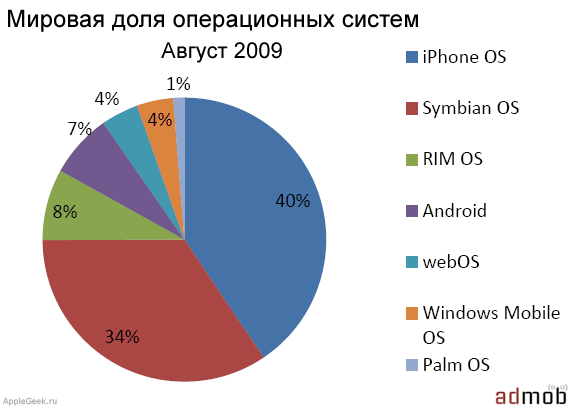
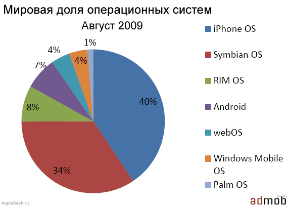
Вопросы для самоконтроля
- Какие уровни входят в структуру компьютерной системы?
- Из каких слоев состоит вычислительная система?
- Какова роль операционной системы в качестве слоя?
- Каким бывает программное обеспечение?
- Какие определения можно дать операционной системе?
- В чем назначение операционной системы?
- Для каких компьютеров не нужна ОС? Почему?
- В каких случаях возникает необходимость в ОС?
- Перечислите основные функции ОС.
- Каковы основные задачи ОС в роли виртуальной машины?
- В чём состоят задачи ОС в роли менеджера ресурсов?
- Каковы дополнительные функции операционной системы?
- В чем заключаются рыночные требования к ОС?
- Сколько поколений ЭВМ было в истории вычислительной техники?
- В чём была особенностей компьютеров 1-ого поколения?
- Какие ОС использовались на компьютерах 1-ого поколения?
- Когда и для чего стали использовать систему пакетной обработки данных?
- Когда стали использоваться первые ОС? Как они назывались?
- Почему OS/2 не стала лидером на рынке ОС для ПК?
- Где нашла своё применение OS/2?
- Какие направления в развитии ОС поддерживала Microsoft в 90-х годах?
- Что такое пакетный режим и что он позволяет?
- Как связаны между собой распределение времени и многозадачность?
- Что такое разделение полномочий?
Список литературы
- Соломон Д., Руссинович М. Внутреннее устройство Microsoft Windows 2000 . СПб.: Питер, 2001.
- Робачевский А.М. Операционная система UNIX . СПб.: BHV, 1997.
- Олифер В.Г., Олифер Н.А. Сетевые информационные системы . СПб.: Питер, 2001.
- Немет Э., Снайдер Г., Сибасс С., Хейн Т. UNIX: руководсьво системного администратора . СПб.: BHV, 2002.
- Немет Э., Снайдер Г., Сибасс С., Хейн Т. UNIX: руководсьво системного администратора . СПб.: BHV, 2002.
- Гордеев А.В. Операционные системы: Учебник для вузов. 2-е изд. . СПб.:Питер, 2007.
© 2012 Штанюк А.А.